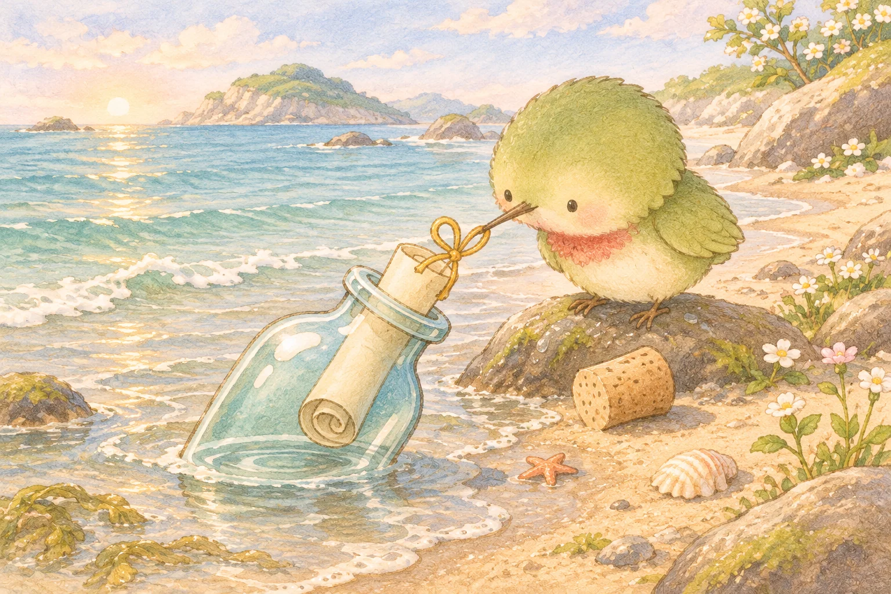
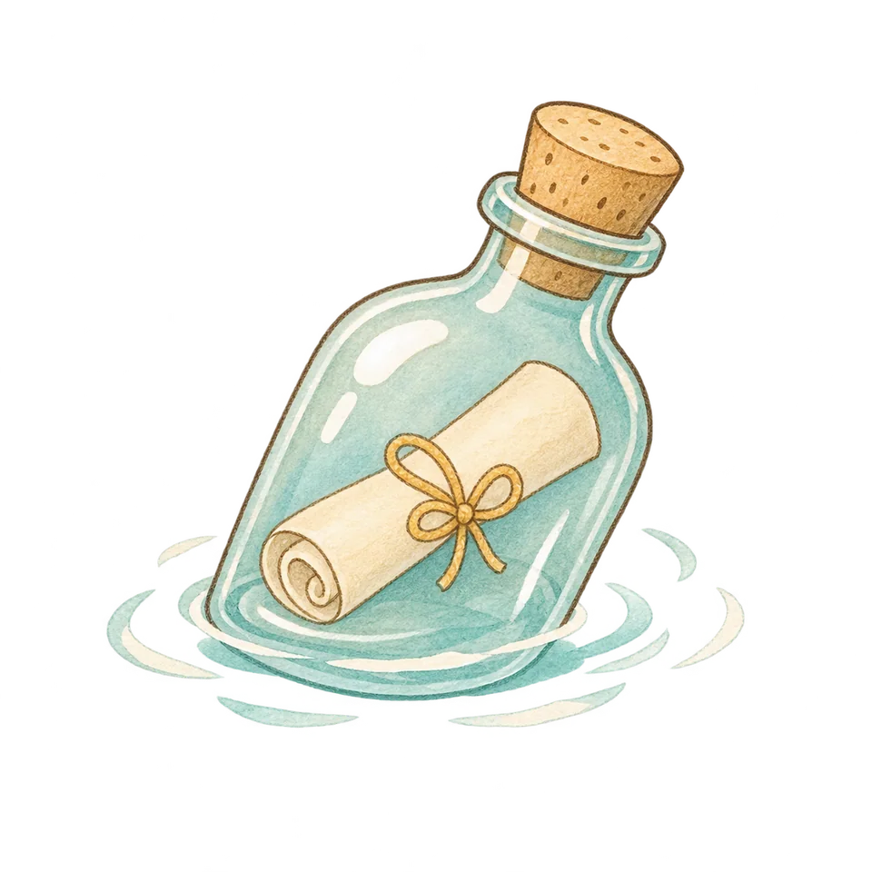
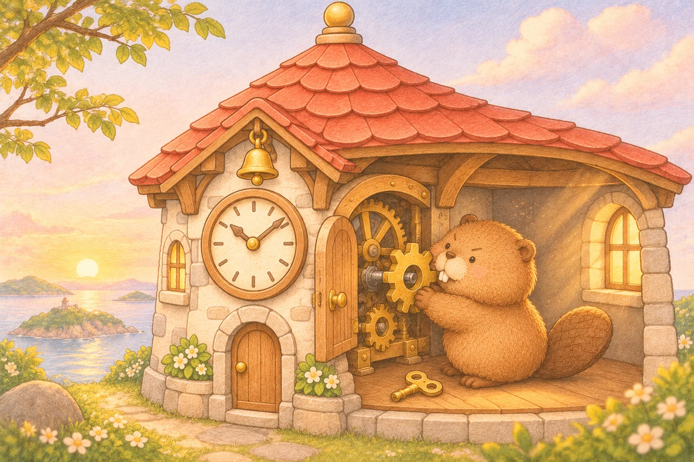
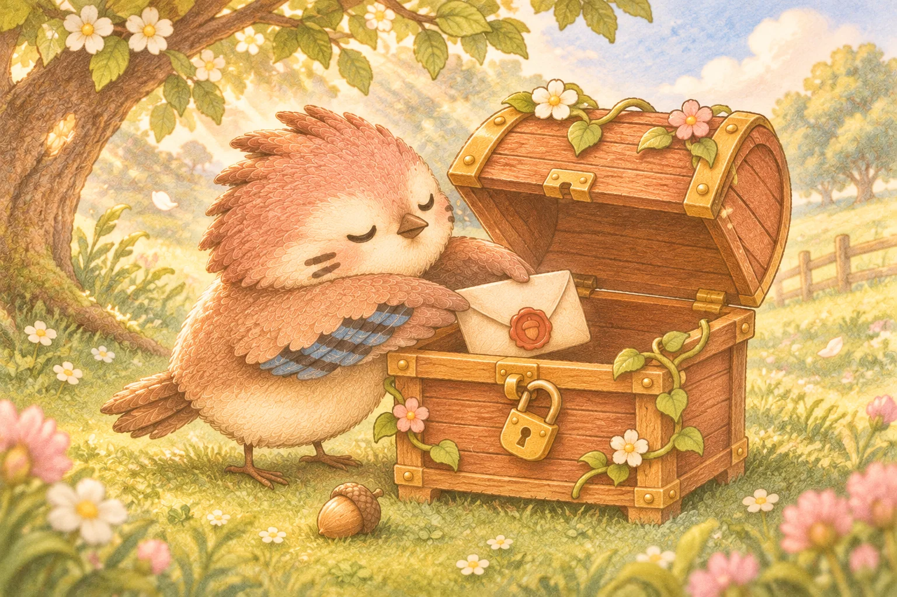
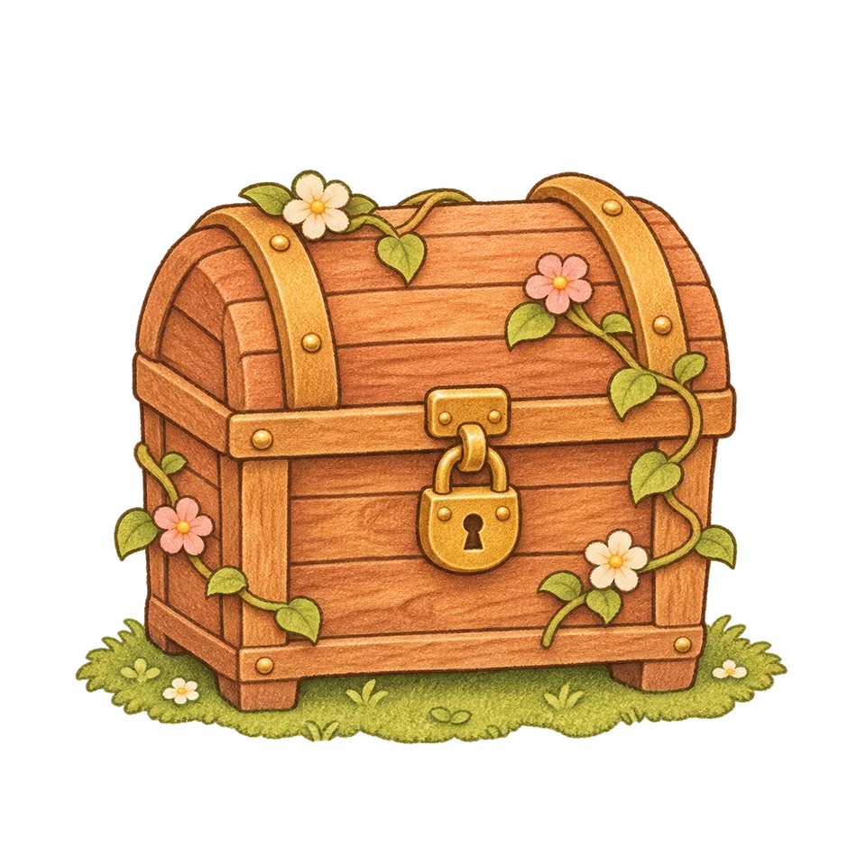
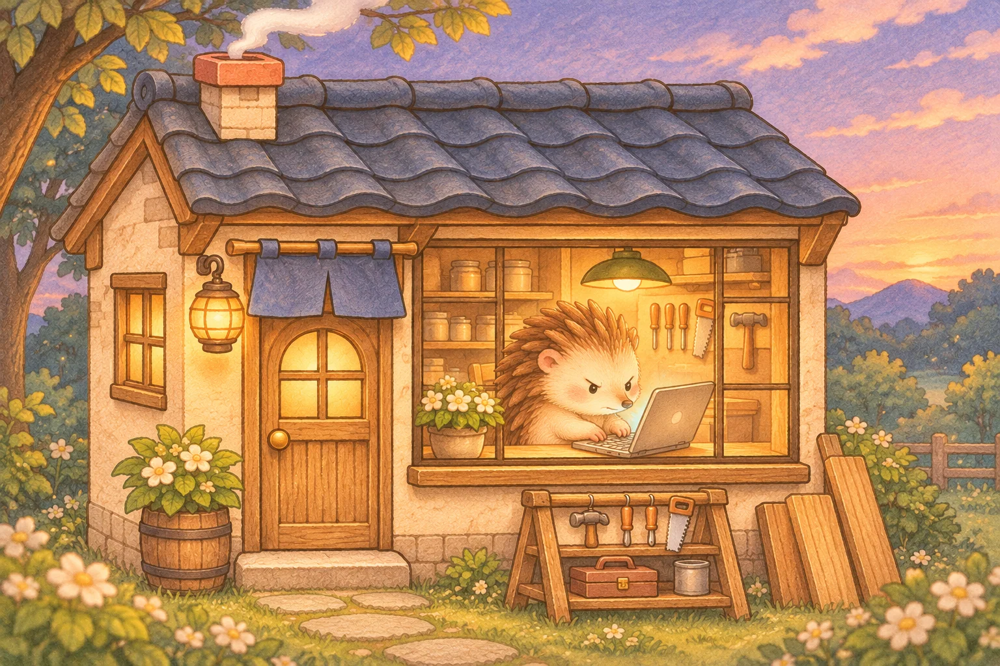

小野猪 · 海边饭馆
开饭喽
小野猪隔着布端来红陶锅。还没坐稳，桌上已经多摆了一只碗。


 你好呀，我是啾啾。
你好呀，我是啾啾。一身嫩绿的羽毛，一点暖暖的腮红。啾啾住在海边，忙着送信，也忙着记住沿途的小事情。
有时候，它搬一片比自己还大的叶子；有时候，送错了门，就悄悄折回去。累了便缩进小巢，等下一阵风来。
岛民的住处与来往
寄自岛上的十个地点
小野猪 · 海边饭馆
小野猪隔着布端来红陶锅。还没坐稳，桌上已经多摆了一只碗。

猫头鹰 · 小岛电影院
猫头鹰把最后一张票根收进夹子。门还开着，晚一点走也可以。


小獾 · 绿屋顶书屋
小獾翻到帆船出海的那一页。书页上有阳光，嘴角上有饼干碎。


寄居蟹 · 粉色双屋
双屋请柬已经放在邻居的门边。寄居蟹把钳子拢好，等门里传来脚步声。


小狐狸 · 小账房
小狐狸用短铅笔点了点账本的最后一格，满意地眯起眼睛。


啾啾 · 海边漂流瓶
潮水把一封卷起来的信送上岸。啾啾踩稳石头，探出长喙去够那截丝带。


河狸 · 石砌小钟楼
河狸把缺的那枚齿轮装回去，屏住呼吸，等第一声钟响。


小鼹鼠 · 笔记收藏亭
小鼹鼠对过索引，把两本旧笔记放进木托盘。下午，它们就有自己的格子了。


松鸦 · 藤蔓小宝箱
松鸦把封好的信轻轻放进花藤间的箱子，橡子纹火漆还好好地贴着。


刺猬 · 大窗小工坊
天色暗下来，工坊的大窗亮着。刺猬敲完最后一行，才想起抬头看一眼晚霞。

把小事，一张一张存起来。
清晨的布帘，午后的阳光，和深夜还亮着的窗。
还没找到这张画，换个词试试。
写给今天的你
有时候，绕了一点远路，
刚好看见了原本会错过的风景。